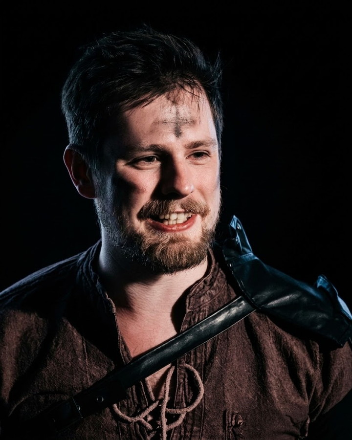
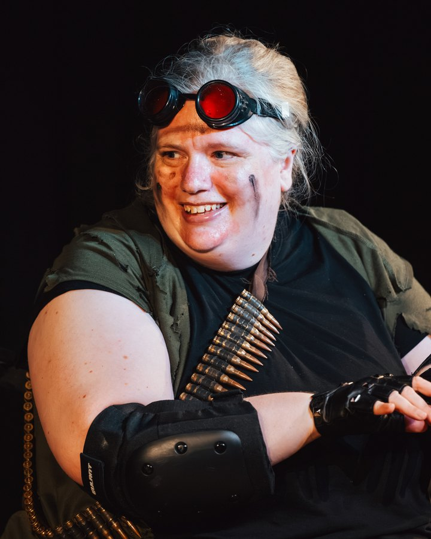
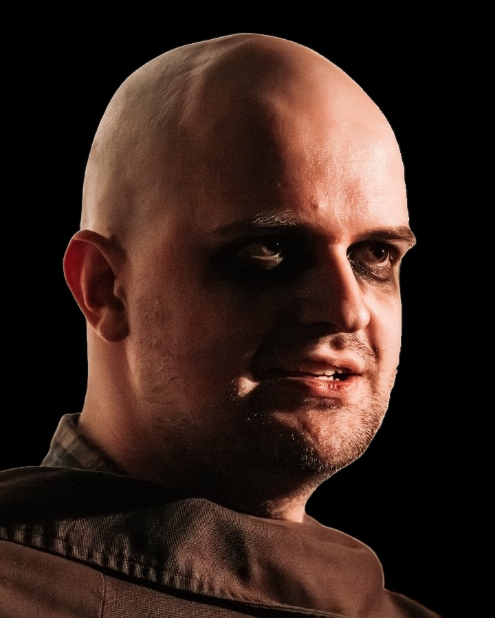
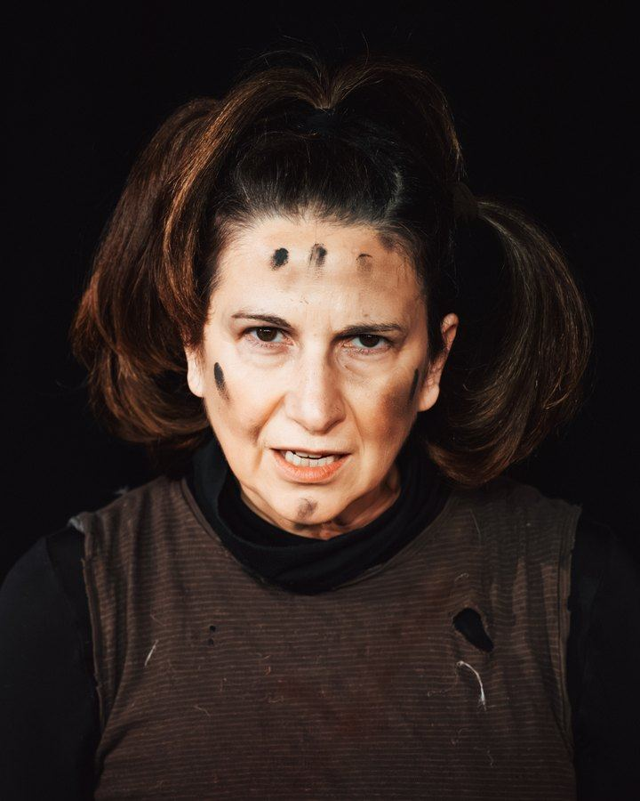
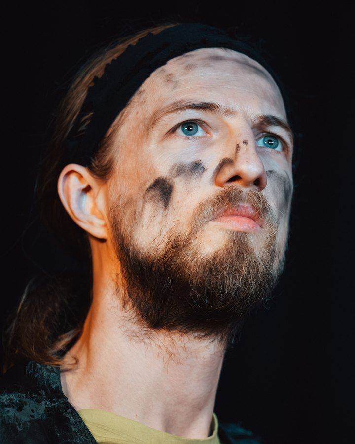
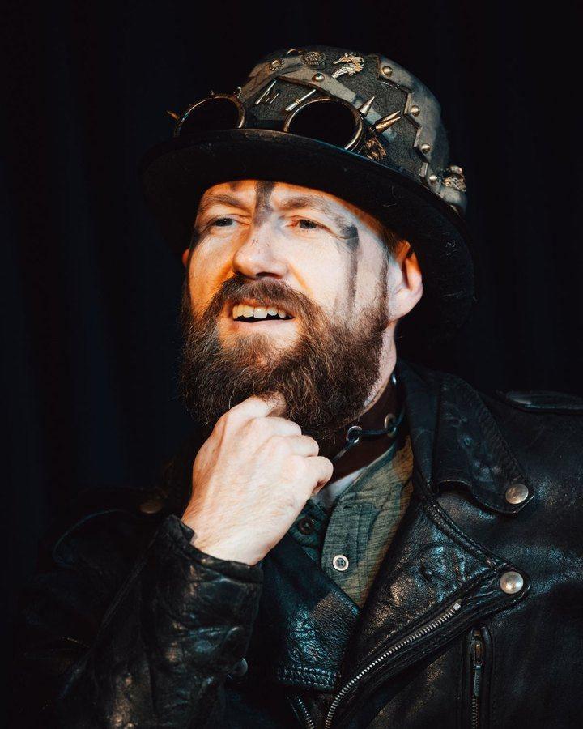
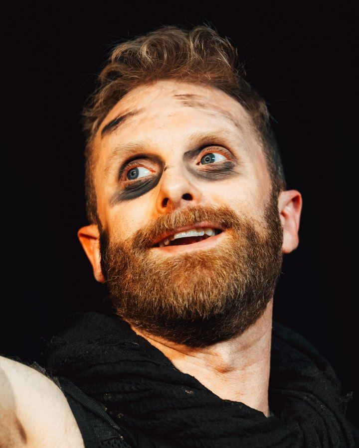
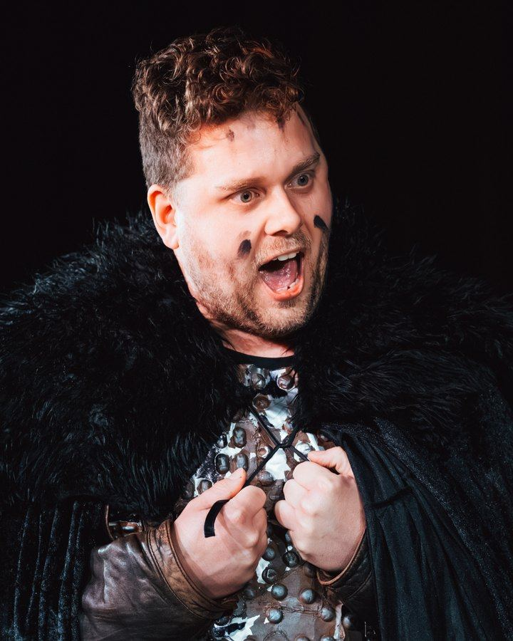
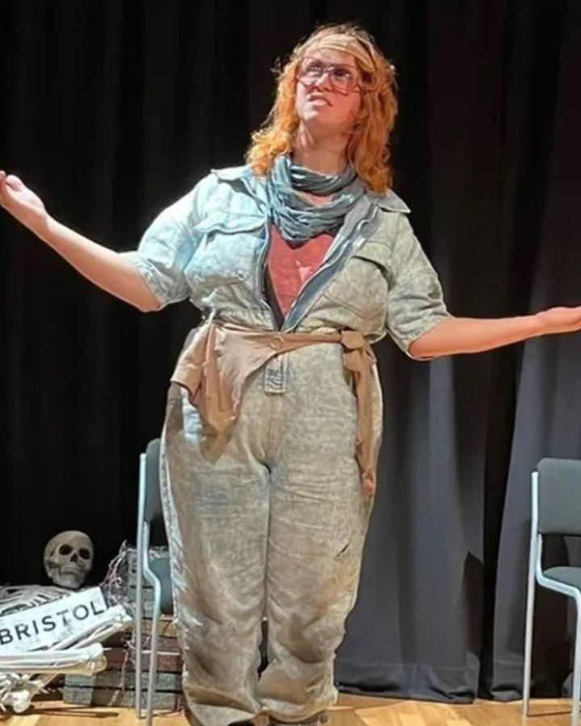

Meet the wastelanders
Wasteland Improv brings together performers passionate about long-form storytelling, character-driven narratives and theatrical improvisation — a Bristol ensemble who have been building worlds together for several years, and destroying them shortly afterwards.
Survivors, so far
-

Pete
Director & performerHigh priest of a faith he founded last Tuesday. Specialises in doomed quests and in killing off everyone else’s characters. The ash on his forehead is ceremonial. The smile is not.
-

Emma T
PerformerTurned up to the apocalypse with goggles, a bandolier and the energy of someone who packed snacks. Has never fired a shot. Uses the bullets as currency, jewellery, and once as a very expensive comb.
-

James
PerformerTook a vow of intensity around year three of the collapse and has not broken it. The eye-black is war paint. The hood is for dramatic reveals. The stare is because someone moved his tin of beans.
-

Petia
PerformerBraids her hair before every raid on the grounds that civilisation may be dead but standards are not. The three marks on her forehead mean something. She will explain. You will not like it.
-

Will K
PerformerReceives visions from the old world, most of them about bus timetables. Last seen staring into the middle distance waiting for a sign. The sign is usually lunch.
-

Will G
PerformerScavenged a top hat, bolted a seahorse to it, and declared himself nobility. The spikes are decorative. The beard is a weapon. If the wasteland needs a philosopher or a slightly too-elaborate entrance, he is already dressed.
-

Skelly
PerformerNamed for what is usually left of him by the interval. Survives on soot, charm, and the belief that this time the story will go well. It will not. He grins anyway.
-

Ben
PerformerWears the last fur coat in the West Country and treats every doorway like a boss fight. Shouts first, plots never, hugs in the ruins. The studs on the armour are mostly emotional support.
-

Heather
PerformerThe wasteland’s last remaining lecturer. Still has her glasses. Still has opinions. Will outline the geopolitics of a rusted car park while raiders wait politely to be murdered.